المشرف الرئيسي
جدول المحتويات ¶
تسجيل الدخول ورأس الصفحة ¶
- حتى يستطيع المستخدم الدخول إلى النظام لا بد له أن يحصل على الرابط المقدم من المؤسسة
- قم بإدخال اسم المستخدم وكلمة السر
- أنقر على "تسجيل الدخول"
1.1. رأس صفحة النظام ¶
|
|
|||||
|
|
|
|
|
|
|
| 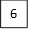 |
|
|
|||
-
اسم المؤسسة
-
اللغة: أنقر على "اللغة" لتغيير اللغة من العربية إلى الإنجليزية أو العكس.
-
الإشعارات: تظهر للمستخدم النشاطات والمهام المطلوبة منه.
-
أنقر على إشعارات، ومن ثم أنقر على إحدى الإشعارات

-
-
الرسائل: توصل إلى نظام الرسائل الخاص بنظام جدير
-
أنقر على "أيقونة الرسائل"

-
أنقر على "البريد الوارد" في حال وجود أي رسالة
-
لإرسال رسالة أنقر على "بريد إلكتروني جديد"
-
أدخل عنوان واسم ونص الرسالة والشخص المراد إرسال الرسالة له ومن ثم أنقر على "إرسال"
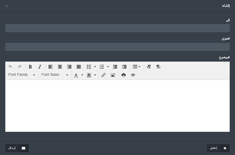
-
-
الفصل الدراسي: تستخدم لإختيار أحد الفصول الدراسية المدرجة للنظام

-
اسم المستخدم: وينقسم إلى جزئين
-
الملف الشخصي: تستخدم للوصول إلى صفحة المستخدم الشخصية

-
سوف تظهر البيانات الأساسية للمستخدم مع إمكانية القيام بالتعديل على بعض هذه البيانات.
-
تسجيل الخروج: للخروج من النظام
-
2. لوحة القيادة ¶
تظهر لوحة القيادة للمستخدم بعض البيانات التوضيحية على شكل رسوم بيانية لبعض الوحد البنائية في النظام منها: مؤشرات الأداء، أنظمة الإعتماد الوطنية والدولية، حالة الإعتماد، وبعض البيانات العامة عن المؤسسة، والبيانات الخاصة بالمستخدم.
-
للوصول إلى لوحة القيادة أنقر على "لوحة القيادة" من القائمة الرئيسية
-
يمكن للمستخدم أن يطلع على أي من البيانات التي تم ذكرها سابقاً من خلال اختيارها من
اللائحة الفرعية للوحة القيادة
-
لرؤية البيانات الخاصة بمؤشرات الأداء الرئيسية قم بالنقر على "مؤشرات الأداء
الرئيسية".
-
لرؤية حالة الإعتماد أنقر على "حالة الإعتماد"
3. خريطة المناهج ¶
الهدف من وحدة البناء هذه هي إيجاد مجموع من مخرجات البرنامج ومخرجات المادة الدراسية للتعلم (PLOs و CLOs) والربط بينهما، والذي سوف يساعد بدوره على وضع جميع المتطلبات الخاصة بالمواد الدراسية المدرّسة في الجامعة
الفوائد: هدف وحدة البناء هذه هو رفع مستوى جودة المواد الدراسية في الجامعة
-
للدخول إلى خريطة المناهج أنقر على "خريطة المناهج" المتواجدة في اللائحة الفرعية من
المنهاج الدراسي.
-
سوف تظهر علامات تبويب خاصة بخريطة المناهج في اللائحة الرئيسية لخريطة المناهج،
بالإضافة إلى صندوق البحث المخصص لإيجاد البرنامج أو المادة الراسية.
علامات التبويب الأربعة موزعة بالشكل الآتي :- إدارة البرنامج : لإدارة مخرجات البرنامج التعليمية ( PLO`s) ضمن البرنامج.
- إدارة المواد الدراسية : لإدارة مخرجات المادة الدراسية التعليمية (CLO`s) ضمن المادة الدراسية .
- التقارير : تظهر كفاءة المواد الدراسية والبرامج.
-
للبدء بعملية إدارة برنامج أنقر على "إدارة"
-
قم باختيار إحدى مجالات التعلم المدرجة ومن ثم أنقر على "إدارة"
- قم بتعبئة الحقول المطلوبة ومن ثم أنقر على المربع الأبيض لاختيارها.
- كما يمكن للمستخدم أن يقوم بإضافة مخرج تعليمي جديد من خلال التقر على "إضافة مخرج تعليمي".
- بعد أن يتم اختيار جميع المخرجات التعليمية المطلوبة أنقر على "حفظ"
-
أنقر على "طرق التقييم ومن ثم أنقر على "إدارة طرق التقييم"

-
قم باختيار طرق التقييم المناسبة ومن ثم أنقر على "حفظ"
-
لإضافة محتوى تقييم أنقر على "إدارة"
-
قم بتعبئة الحقول المطلوبة لطرق التقييم ثم أنقر على "حفظ"
-
أنقر على "مصفوفة الربط" للقيام بربط المواد الدراسية مع مجالات التعلم ، بعدها قم
باختيار أحد المستويات وقم بتعبئة البيانات وأنقر على "حفظ"
-
أنقر على "إدارة المواد الدراسية" لإدارة مخرجات المواد الدراسية للتعلم
-
انقر على "مخرجات التعلم".
-
انقر على "إدارة مخرجات التعلم"، ومن ثم قم بتعبئة الحقول المطلوبة وانقر على "حفظ".
-
من صفحة مخرجات التعلم انقر على "ربط".
-
قم باختيار طرق التقييم من خلال النقر على المربع الأبيض الذي يظهر بجانبها ومن ثم أنقر
على "حفظ".
-
انقر على "طرق التقييم "ثم قم بالنقر على "إدارة طرق التقييم".
-
قم بتعبئة الحقول المخصصة بطرق التقييم ومن ثم أنقر على "حفظ".
-
انقر على شعب المواد الدراسية، ومن ثم ربط مخرجات التعلم وقم باختيار طرق التقييم
المطلوبة، وذلك من خلال السؤال المطلوب ومن ثم قم بربطها مع مخرجات التعلم للمادة
التعليمية CLO's ومن ثم ضع مقياس لنقاط السؤال
-
عُد مرة أخرى لصفحة الشعب الدراسية ، ومن ثم أنقر على تقييم الطلاب وقم باختيار الطالب
وطريقة التقييم المطلوبة ، حتى تستطيع وضع نقاط الطلاب لكل سؤال ومن ثم أنقر على "حفظ".

-
للحصول على تقرير للخطوات السابقة أنقر على تقارير من صفحة خريطة المناهج، ومن ثم أختر
التقرير المطلوب وتفاصيل العرض الخاصة به.
-
في حال أراد المستخدم أن يقوم ببعض التعديلات على طرق التقييم ومجالات التعلم فبإمكانه
القيام بتلك التعديلات من خلال النقر على لائحة التبويب "الإعدادات" .
دفتر العلامات ¶
هذا الجزء من هذه الوحدة البنائية سوف يساعد المستخدم في الحصول على جميع العلامات الخاصة بالطلاب
-
للدخول إلى دفتر العلامات قم بالنفر على " دفتر العلامات"

- . أنقر على " عرض الشعب" الموجودة بجانب اسم المادة الدراسية
-
أنقر على " عرض الطلاب" للوصول إلى جميع الطلاب المسجلين في الشعبة الدراسية
-
أنقر على "المناهج" لتقييم الطالب كما هو موضح ومن ثم أنقر على اسم طريقة التقييم وقم
بتعبئة البيانات المراد
إضافتها أو تعديلها ومن ثم أنقر على "حفظ"، سوف تظهر لائحة الطلاب مع العلامات الخاصة
بهم بكل سؤال داخل التقييم
-
انقر على "الإختبارت" واختر أحد الإختبارت، الإختبارات القصيرة أو الوظائف
-
سوف تظهر لك لائحة بأسماء الطلاب الذي قدموا هذا الاختبار والنتيجة لكل سؤال والنتيجة
النهائية للطالب
-
أنقر على "تقرير" للحصول على التقرير الخاص بالاختبار الذي تم اختياره
4. شجرة البرامج ¶
هذه الوحدة تتيح للمستخدم ربط بيانات الجامعة وأهدافها مع البرامج بطريقة منظمة على شكل رسم بياني هرمي يبدأ من الجامعة وينتهي بمخرجات التعلم لكل برنامج من برامجها
-
للدخول إلى شجرة البرامج أنقر على " شجرة البرامج " المتواجدة في اللائحة الفرعية من
المنهاج الدراسي.
-
قم باختيار أحد البرامج أو قم بالبحث عن برنامج محدد من خلال صندوق البحث ومن ثم أنقر
على " تعديل الشجرة"
-
من خلال القائمة الفلاعية اختر "رؤية الجامعة" وقم بإضافة الكلمات المفتاحية الخاصة
بالجامعة باللغتين العربية والإنجليزية وانقر على "حفظ"
- سيتم ربط الكلمات المفتاحية لرؤية الجامعة مع الكلمات المفتاحية لرؤية الكلية
-
انقر على التناسق (رؤية الجامعة مع رؤية الكلية) .
-
قم باختيار الكلمات المفتاحية لرؤية الكلية من "رؤية الكلية"، ومن ثم قم بالربط بين
الكلمات المفتاحية لرؤية الجامعة والكلمات المفتاحية لرؤية الكلية من خلال النقر على
صناديق الربط .
-
قم باختيار تناسق(رؤية الكلية مع رؤية البرنامج).
-
قم باختيار الكلمات المفتاحية للكلية من "رؤية الكلية" ومن ثم قم بعملية الربط بين
الكلمات المفتاحية للكلية و الكلمات المفتاحية للبرنامج من خلال النقر على مربعات الربط
ثم انقر "حفظ".
-
انقر على رؤية البرنامج مع غايات البرنامج.
-
قم بالربط بين رؤية البرنامج وغايات البرنامج من خلال النقر على صناديق الربط انقر على
"حفظ"
-
قم باختيار مخرجات التعلم للبرنامج مع رؤية البرنامج.
-
قم بالربط بين مخرجات التعلم للبرنامج مع غايات البرنامج من خلال مربعات الربط ثم قم
بالنقر على "حفظ"
-
الان لعرض شجرة البرنامج التي تم إنشاؤها قم بالنقر على "عرض الشجرة".
5. الاختبارات ¶
وحدة البناء الخاصة بالاختبارت هي المسؤولة عن كل ما يخص اختبارات الطالب والتس تتضمن الاختبارات، الاختبارت القصيرة والمشاريع بالإضافة إلى إمكانية الوصول لأي سؤال يحتاجه المستخدم بأي وقت
-
أنقر على "الاختبارت" المدرجة في اللائحة الرئيسية
-
يمكن للمستخدم إدارة مجموعة مختلفة من الاختبارات المتوفرة في اللائحة الخاصة

- للبدء بالإختبار أنقر على "الاختبار"
-
لإنشاء اختبار جديد أنقر على "إنشاء اختبار"

-
قم بتعبئة جميع البيانات الخاصة بالاختبار ومن ثم أنقر على "حفظ"
-
سوف يظهر الاختبار مع جميع البيانات الخاصة وبالإجراءات كما هو موضح
- " عرض " : يستخدم لرؤية الصورة النهائية للاختبار بعد اختيار الاسئلة
- " إدارة " : يتيح للسمتخدم التعديل على بيانات الإمتحان "كما تم توضيحها في نقطة 5"
- " تصميم " : يتيح للمستخدم إضافة وحذف اسئلة الاختبار
- " حذف " : لإزالة الاختبار
- " المراقب" : يتيح للمستخدم إضافة أو إزالة مراقب للامتحان
- " إدارة الشعب " : يتيح للمستخدم اختيار الشعب الدراسية المطلوب منها القيام بهذا الاختبار
-
لإضافة سؤال على الاختبار أنقر على " تصميم"

-
اختر السؤال المراد إضافته ومن ثم قم بتحديد علامة السؤال وأنقر على "حفظ"
-
قم بإعادة الخطوة السابقة حتى يصل مجموع علامات الاسئلة مساوٍ لعلامة الاختبار الكاملة
-
لتقوم بنشر الاختبار قم بالنقر على "نشر"
-
سيظهر صنوق حوار يحتوي على مجموعة من البيانات ، قم بتعبئة البيانات المطلوبة ومن ثم
أنقر على "نشر"
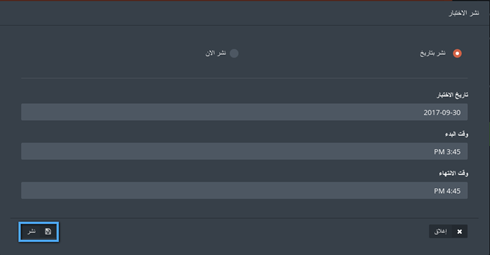
- بعد أن يتم البدء الاختبار، يمكن للمستخدم النقر على "حضور الطلاب"، للسماح للطلاب والتأكيد على حضورهم للاختبار
- أنقر على "حضور الطلاب"
-
في حال حضور الطالب للامتحان، أنقر على المربع الذي بجانب اسم الطالب للتأكيد على حضوره
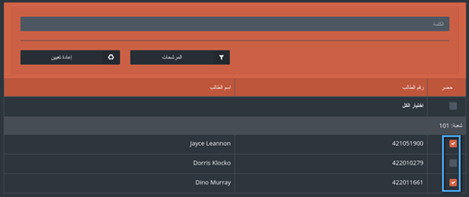
- بعد انتهاء الاختبار، يمكن للمستخدم الانتقال إلى الخطوة التالية وهي تصحيح الاختبار للطلاب من خلال النقر على "تصحيح"
- انقر على "التحقق من الإجابة"المتواجدة بجانب اسم الطالب
-
في حال حضور الطالب للامتحان، أنقر على المربع الذي بجانب اسم الطالب للتأكيد على حضوره


الاختبارات القصيرة ¶
لإنشاء وإدارة الاختبارات القصيرة قم بالخطوات السابقة لانشاء اختبار مع وجود أختلافَين:
- سوف يكون هناك خيارَين جديدَين للمستخدم وهو بدء الاختبار وانهاء الاختبار ، وتعتمد على وقت البدء والانتهاء الذي تم تحديده مسبقاً
- لا يوجد لائحة حضور للطلاب
-
أنقر على "الاختبارات القصيرة" المتواجدة في اللائحة الخاصة بالاختبارات

-
بعد أن يتم إنشاء الاختبار يمكن النقر على "بدء الاختبار" ليستطيع الطالب البدء
بالإجابة
-
للتأكيد على بدء الاختبار أنقر على "نعم"
-
لإيقاف الاختبار أنقر على "انهاء الاختبار"
-
. للتأكيد على الطلب أنقر على "نعم"
الوظائف ¶
لانشاء وإدارة الوظائف على المستخدم اتباع جميع الخطوات الخاصة بانشاء الاختبار، والاختلاف الوحيد هنا هو عدم وجود لائحة لحضور الطلاب
-
1. أنقر على "الوظائف"، ومن ثم أنقر على "انشاء وظيفة"
-
قم بتعبئة جميع البيانات المطلوبة ومن ثم أنقر على "حفظ"
- قم بإدارة الوظيفة بالطريقة التي تناسبك
بنك الاسئلة ¶
يحتوي هذا الجزء من وحدة البناء الخاصة بالاختبارات على مجموعة الأسئلة المستخدمة في بعض الاختبارات القديمة، والتي يمكن للمستخدم إعادة استخدامها مرة أخرى
- أنقر على "بنك الأسئلة"
-
قم بالنقر على "انشاء سؤال"
-
قم بإدخال جميع البيانات المطلوبة
-
يمكن للمستخدم اختيار حالة السؤال من اللائحة الخاصة بحالة السؤال

-
حالة السؤال تنقسم إلى قسمين:
- خاص: وهي الاسئلة التي يتم انشاؤها من قبل المستخدم ولا يمكن لأحد غيره استخدامها
- عام: الاسئلة التي يمكن لأي مستخدم داخل النظام استخدامها
-
في حال أن السؤال يتطلب الافاق ملف أنقر على "اتاحة ارفاق ملف" ليتمكن الطالب من ارفاق
ملف للسؤال

- بعد الانتهاء أنقر على "حفظ"
-
يمكن للمستخدم أن يقوم بالتعديل على السؤال من خلال النقر على "تعديل"
-
يمكن للمستخدم أن يقوم بربط السؤال بمخرجات التعلم من خلال "مخرجات التعلم"
-
قم باختيار مخرج التعلم المطلوب ومن ثم انقر على "حفظ"
بنك الاختبارات ¶
يحتوي هذا الجزء من وحدة البناء الخاصة بالاختبارات على مجموعة من الاختبارات القديمة التي يمكن للمستخدم الاستفادة منها في بناء الاختبار الخاص به
-
قم باختيار المادة الدراسية التي تريد رؤية الاختبارات الخاصة بها
-
قم باختيار الاختبار وانقر على "عرض الاختبار"
-
يمكن استخراج تقرير عن الاختبار من خلال النقر على "تقرير

6. الإدارة والسياسات ¶
تسمح وحدة البناء هذه للمستخدم الاطلاع وتننظيم السياسات والإجراءات المتبعة في المؤسسة، بالإضافة إلى إدارة الإجتماعات التي ستقام وبيانات الاجتماعات التي اقيمت مسبقاً
A. اللجنة ¶
اللجنة هي جزء من وحدة البناء الخاصة بالسياسات والإدارة، تسمح للمستخدم بإضافة وإدارة اللجان، والتي يمكن استخدامها في الاجتماعات
-
من اللائحة الفرعية الخاصة بالسياسات والإدراة أنقر على "اللجنة"
-
لإضافة لجنة جديدة أنقر على "إضافة جديد"
-
قم بتعبئة جميع البيانات المطلوبة للجنة ، ومن ثم قم بإضافة أعضاء للجنة من خلال النقر
على "إضافة مزيد" ومن ثم اختر أحد الأعضاء كقائد لهذه اللجنة ، بعد الانتهاء أنقر على
"حفظ"
-
يمكن للمستخدم القيام بالعديد من الإجراءات على اللجنة المضافة، منها التعديل على
البيانات ، حذف اللجنة، استخراج تقرير عن اللجنة وأعضائها ومهامها
B. إدارة الغرف ¶
في هذا الجزء من وحدة البناء يمكن للمستخدم أن يقوم بإضافة كل ما هو مطلوب للقاعات التي يمكن إقامة الإجتماعات بها، كما يمكن إضافة جميع العدة المتوفرة في إحدى الغرف والتي تجعلها ملائمة لاجتماع معين
-
من اللائحة الفرعية الخاصة بالسياسات والإدارة أنقر على "إدارة الغرف"
-
لإضافة غرفة جديدة أنقر على "إنشاء غرفة"
-
أدخل جميع البيانات المطلوبة ومن ثم أنقر على "حفظ"
- لإضافة المعدات أنقر على "المعدات" في اللائحة الخاصة بإدارة الغرف
-
أنقر على "إنشاء معدات"
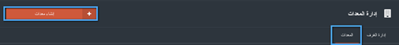
-
قم بتعبئة البيانات ومن ثم أنقر على "حفظ"
- ستظهر لائحة تحتوي على بيانات المعدات ، ويمكن للمستخدم القيام بإجرائَي التعديل والحذف
-
بالعودة إلى اللائحة الخاصة بالغرف، يمكن للمستخدم القيام بالعديد من الإجراءات على الغرفة، منها التعديل والحذف، كما يمكن أن يقوم المستخدم بربط المعدات بالغرف من خلال النقر على "إدارة"
- قم باختيار العدة المتوفرة داخل هذه الغرفة ومن ثم أنقر على "حفظ"
C. محاضر الاجتماع ¶
هنا يمكن للمستخدم القيام بإدارة الإجتماعات، وجميع البيانات المتعلقة والمرتبطة باجتماع محدد
-
أنقر على "محضر الاجتماع"

-
لإضافة محضر اجتماع جديد أنقر على "إضافة محضر اجتماع"
-
قم بتعبئة البيانات المطلوبة ومن ثم أنقر على حفظ
-
أنقر على "إدارة" لتعبئة جميع البيانات المتعلقة بالاجتماع
-
أول ما سيظهر لك هو تفاصيل الاجتماع وهو أول ما يمكن تصفحه في إدارة محضر الاجتماع
-
أنقر على "تعديل" في حال وجود تعديلات على بيانات الاجتماع
-
أنقر على "الغايات" وقم بإضافة أو نعديل الغايات المضافة
-
أنقر على "الحضور" لإدارة الحضور للاجتماع، قم بالنقر على "إضافة حضور"
-
قم بإضافة باختيار اسم أحد المستخدمين للنظام من خلال لائحة المستخدمين ، ثم انقر على المربع بجانبه لتأكيد حضوره على الإجتماع، قم بإضافة جميع الحضور سواء من المؤسسة أو من خارج المؤسسة ومن ثم أنقر على "حفظ"
- أنقر على "جدول الأعمال" لإضافة جدول أعمال الاجتماع ، وإضافة عضو مسؤول عن تنفيذ هذا الجدول
-
أنقر على "إضافة موضوع"
-
قم باختيار الشخص المسؤول وادخل اسم الموضوع ومن ثم قم بالنقر على "حفظ"

-
يمكن للمستخدم إرفاق واستخراج المرفقات الخاصة بجدول الأعمال
-
قم بالنقر على "محاضر الاجتماعات" ومن ثم على "إضافة محضر اجتماع"
-
قم بكتابة محضر الاجتماع وارفاق الملف الخاص بالمحضر، وناقر على "حفظ"
- أنقر على "الإجراءات"
-
أنقر على "إضافة إجراء" قم بتعبئة جميع البيانات المطلوبة وأنقر على حفظ
-
في حال اراد المستخدم إضافة اجتماع كمرجع للاجتماع المنعقد أنقر على "المراجع"، ومن ثم قم بالنقر على "إضافة"
-
اختر أحد الإجتماعات التي عقدت سابقاً والتي يعتمد عليها الاجتماع الحالي وانقر على "حفظ"
D. السياسات والأجراءات ¶
هذا الجزء من وحدة البناء يستخدم لترتيب وإدارة جميع الوثائق الخاصة بالسياسات والإجراءات المتبعة في المؤسسة
-
أنقر على "السياسات والإجراءات"
-
لإضافة سياسة أو اجراء جديد أنقر على "إضافة جديد"
-
قم بتعبئة جميع الحقول المطلوبة ومن ثم أنقر على "حفظ"
-
أنقر على "إدارة"
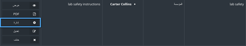
-
في هذه الصفحة سوف يقوم المستخدم بإدارة عدد من الوثائق المختلفة
7. الاعتماد ¶
تتيح هذه الوحدة للمستخدم التحكم بعملية الإعتماد سواء أكانت دولية أو وطنية(إعتماد مؤسسي أو برامجي)
-
للبدء بعملية الإعتماد ، قم باختيار إحدى أنواع الإعتماد المدرجة في القائمة الفرعية.
-
قم بالنقر على "إنشاء اعتماد".
-
اختر نوع الإعتماد المراد إنشائه، ثم انقر على "التالي".
-
اختر موعد التسليم من خلال النقر على "موعد التسليم".
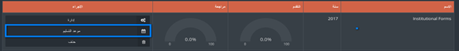
-
قم بتحديد موعد التسليم ثم انقر على "حفظ التعديلات."
-
للدخول الى نموذج الاعتماد قم بالنقر على "إدارة".

-
يوجد مجموعة من الأزرار التي تساعد المستخدم للعمل على النماذج
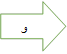 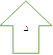 - إدخال موعد التسليم، وذلك عن طريق تحديده من خلال التقويم.
-
تعيين مستخدم للقيام بتعبئة النماذج.
-
أنقر على "إضافة مستخدم" ثم قم بإختيار المستخدم الذي تريد إضافته
-
يمكن إيجاد المستخدم المطلوب من خلال البحث عنه عن طريق الإسم، اختر
اسماء المستخدمين المراد إضافتهم ومن ثم أنقر على "إضافة"
-
أنقر على "إضافة مستخدم" ثم قم بإختيار المستخدم الذي تريد إضافته
-
زر تعديل النماذج
-
أنقر على زر تعديل النماذج، وقم بتعبئة أو تعجيل النموذج كما تريد، وقم
بالنقر على حفظ في حال الإنتهاء من التعديلات دون وضع علامة "منتهي "
عليه (سيتم اكماله لاحقاً)، أو قم بالنقر على حفظ وانتهاء لحفظ النموذج
ووضع علامة "منتهي " عليه
-
للرجوع إلى النسخة السابقة لهذا النموذج أنقر على "تاريخ"
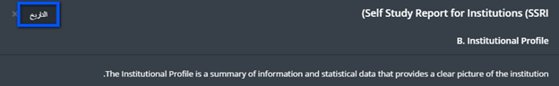
-
يستطيع المستخدم أن يرى النموذج بالنسختين، النسخة الحالية للنموذج
والنسخة الجديدة لنفس النموذج والتعديلات التي تمت عليه ، بالإضافة إلى
وقت وتاريخ حصول التعديل على النموذج.
- قم بالتعديل على النموذج أو ابقه كما هو ثم أنقر على حفظ التعديلات
-
أنقر على زر تعديل النماذج، وقم بتعبئة أو تعجيل النموذج كما تريد، وقم
بالنقر على حفظ في حال الإنتهاء من التعديلات دون وضع علامة "منتهي "
عليه (سيتم اكماله لاحقاً)، أو قم بالنقر على حفظ وانتهاء لحفظ النموذج
ووضع علامة "منتهي " عليه
-
عرض النموذج
-
يستطيع المستخدم عرض النموذج من خلال النقر على "عرض"

-
يستطيع المستخدم عرض النموذج من خلال النقر على "عرض"
-
إرسال للمراجع
- بكل بساطة أنقر على إرسال النموذج للمراجع ليقوم بمراجعة البيانات.
-
تحميل النموذج
-
أنقر على "تحميل"
- ختر الصيغة المراد تحميل النموذج بها Microsoft word أو pdf.
-
أنقر على "تحميل"
-
تحتوي النماذج على مؤشرات خاصة بها وهي كالآتي
-
الارتباط مع AIMS من وحد البناء الفرعية المهمة، تستخدم لإرسال النماذج الخاصة بهيئة
الاعتماد الوطنية NCAAA إليها دون الحاجة إلى إرسالها ورقياً .
- قم باختيار نوع الاعتماد مؤسسي او برامجي.
-
قم باختيار النماذج المراد إرسالها ومن ثم أنقر على "الإرتباط مع AIMS "
-
مستوع الملفات وهو عبارة عن إدارة الملفات
يستطيع المستخدم إبقاء وحفظ الملفات والوثائق المهمة الخاصة به أو مشاركة ملف مع مستخدم آخر، والرجوع إلى هذه الملفات مرة أخرى في أي وقت.
8. المراجعين ¶
يعد المراجع جزء من وحدة البناء الخاصة بالإعتماد ، إذ أنها تتيح للمستخدم تتبع عملية المراجعة في الجامعة بشكل كامل، كما تستخدم لمراقبة ومتابعة عملية المراجعة بشكل تام.
-
أنقر على "المراجعين" من اللائحة الفرعية الخاصة بالإعتماد
- اختر أحد أنواع المراجعين التي تظهر في اللائحة "أ"
-
من اللائحة "ب" قم باختيار المستوى المطلوب
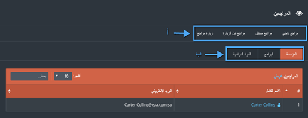
ملاحظة: فقط المراجع الداخلي سوف تظهر له اللائحة "ب" بهذا الشكل، أما بقية المراجعيم فسوف يظهر لهم مستويان (مؤسسي، برنامجي)
-
أنقر على " مراجع داخلي" واختر المستوى المطلوب
-
أنقر على "عرض SSR" وسوف تظهر لك نماذج الإعتماد التي يجب أن تتم مراجعتها
-
لمعرفة الأشخاص الذين قامو بمراجعة النماذج لبرنامج محدد أنقر على المراجعين كما هو ظاهر في الضورة التالية
-
اختر أحد المراجعين الذين ظهرت أسماؤهم لإرسال رسالة له
-
أنقر على "إرسال " لإرسال بريد إلكتروني للمراجع.
-
أنقر على "مراجع مستقر" واختر بين أحد المستويين الخاصين به (مؤسسة،برنامج).
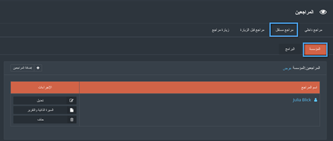
-
أنقر على "إضافة مراجع" لإضافة مراجع جديد
- قم بإضافة مراجع ويتيح النظام للمستخدم إدخال السيرة الذاتية الخاصة به أو كتابتها .
- أنقر على "حفظ "
-
لتعديل بيانات المراجع أنقر على "تعديل"
-
أنقر على "السيرة الذاتية والتقرير " للإطلاع على بيانات السيرة الذاتية الخاصة بالمراجع
- أنقر على مراجع قبل الزيارة , لإضافة مراجع يمكنك إتباع جميع التعليمات السابقة
-
في حال وجود مجموعة من التوصيات التي يراد إضافتها للمؤسسة يمكن إضافتها من خلال " خطة العمل"
-
أنقر على " حطة عمل جديدة " لإضافة خطة عمل.
-
قم بتعبئة جميع الحقول المطلوبة ومن ثم أنقر على حفظ.
- بعد بناء خطة العمل يمكن إضافة التوصيات للمستخدم ، والتأكد من أن خطة العمل لهذا البرنامج تتناسب مع التوصيات المقدمة
-
أنقر على مستوى البرنامج ومن ثم أنقر على توصيات
-
يمكن للمستخدم إضافة خطة عمل محددة للتوصية كم خلال النقر على "خطة العمل" ومن ثم "إنشاء خطة عمل"
-
بعد أن تتم تعبأة البيانات المطلوبة أنقر على "حفظ"
ملاحظة: زيارة المراجع شبيه ب مراجع ما قبل الزيارة ولإضافتها اتبع جميع الخطاوت السابقة الخاصة ب مراجع ما قبل الزيارة
9. مؤشرات الأداء الرئيسية ¶
-
يحتوي نظام جدير على 3 أنواع لمؤشرات الأداء وهي : (مؤشرات الأداء الرئيسية ، مؤشرات
الأداء الرئيسية الاستراتيجية ومؤشرات الأداء الرئيسية التنموية).
-
لإضافة مؤشر أداء جديد أنقر على "إنشاء مؤشر أداء"
-
قم بتعبئة البيانات اللازمة ثم النقر على "حفظ والتالي".
-
لعرض البيانات الخاصة بمؤشر الأداء أنقر على "عرض".
-
قم بإدخال قيم المؤشرات من خلال "وضع قيم" وسوف تظهر القيم بالرسم البياني
-
قم بتعبئة قيم المؤشرات ومن ثم أنقر على "حفظ".
-
انقر على "الإتجاه" لرؤية الفرق بين قيم المؤشرات للعام الحالي مع الأعوام السابقة ،
أنقر على PDF أو صورة لتخزينها على الجهاز الخاص بك.

10. التخطيط الاستراتيجي ¶
تستخدم هذه الوحدة البنائية لبناء الخطة الإستراتيجية للجامعة ، وكليات الجامعة، كما أنه يساعد المستخدم على تتبع العملية خطوة بخطوة.
-
للبدء خطة استراتيجية ، قم باختيار "التخطيط الإستراتيجي" المدرجة في القائمة الرئيسية
-
لبناء الخطة الاستراتيجية أنقر على "استخراج تخطيط استراتيجي"
-
قم بتعبئة جميع الحقول المطلوبة ومن ثم أنقر على "حفظ"
-
للقيام بتعبئة البيانات الخاصة بالخطة الاستراتيجية أنقر على " التقاط البيانات".
-
من خلال الخطة الاستراتيجية يمكن التعديل على الرؤية والرسالة الخاصة بالجامعة، كما
يمكن إضافة قيم للجامعة من خلال النقر على "إضافة جديد"
-
لإضافة هدف على الخطة الاستراتيجية قم بالنقر على " إنشاء" ، ومن ثم قم بتعبئة الحقول
المطلوبة وأنقر على "حفظ " عند الانتهاء
-
لإضافة غاية على الخطة أنقر على "إنشاء" لأحد أنواع الغايات الأربعة ومن ثم قم بتعبئة
الحقول المطلوبة وأنقر على "حفظ"
-
بنفس الطرق السابقة يمكن إضافة مبادرة للخطة من خلال النقر على "إنشاء مبادرة" وتعبئة
جميع البيانات المطلوبة ومن ثم النقر على "حفظ"
-
يمكن أيضاً إضافة خطة للعمل والتوصيات المتعلقة بها من خلال النقر على "إنشاء" وقم
بتعبئة جميع الحقول المطلوبة سواء أكانت الإضافة لخطة عمل أو توصية ومن ثم أنقر على
"حفظ"
-
لإضافة مشروع على الخطة الاستراتيجية أنقر على "إنشاء" وقم بتعبئة البيانات وانقر على
"حفظ"
-
لإضافة نشاط على الخطة الاستراتيجية قم بالنقر على "إنشاء نشاط" وقم بتعبئة البيانات
المطلوبة وأنقر على حفظ..
-
يمكن للمستخدم مشاهدة التقدم وفحص البيانات من خلال لوحة التحكم الخاصة بالخطة
الاستراتيجية
11. دائرة التقييم ¶
تستخدم دائرىة التقييم لتعريف المستخدم بنتائج مؤشرات الأداء، التوصيات، التحليلات، الإجراءات المراد القيام بها، كما أن وحدة البناء هذه تساهم في استمرارية التطوير للمؤسسة
-
للدخول إلى دائرة التقييم ، قم باختيار "دائرة التقييم" المدرجة في القائمة الرئيسية
-
عند دخول المستخدم إلى الصفحة الرئيسية لدائرة التقييم ، سوف يلاحظ قائمة بمؤشرات
الأداء الرئيسية كما بإمكانه انشاء مؤشر أداء جديد من خلال النقر على "اضافة جديد".
-
قم بتعبئة البيانات المطلوبة في وقم باختيار احد الأنواع (مؤشر أداء أو مخصص) وعند
الانتهاء انقر على "حفظ."
-
انقر على "إدارة" للوصول إلى دائرة التقييم المطلوبة.
-
انقر على "القياس " لإضافة طريقة جديدة للقياس، ومن ثم قم بتعبئة الحقول المطلوبة ثم
انقر على "حفظ."
-
قم بتطبيق الخطوة السابقة على بقية العمليات الأخرى كما هو مبين في الشكل.
12. الاستبيانات ¶
تستخدم وحدة البناء هذه لتصميم و بناء الاستبيانات وعلى تعيين أشخاص عليها والتأكد من نتائجهم.
-
للدخول إلى الإستبيانات أنقر على "استبيان" الموجودة في اللائحة الرئيسية.
-
للقيام بإنشاء استبيان ، انقر على "إنشاء استبيان ".
-
قم بتعبئة جميع البيانات المطلوبة، عند الانتهاء يوجد خيارين للحفظ، الأول "حفظ والذهاب
للتالي" للبدء بعملية إنشاء الاستبيان، أما الثاني فهو " حفظ والإكمال لاحقاً"
حيث يتم حفظ الاستبيان دون القيام ببنائه مع إمكانية الرجوع إليه مرة أخرى وإتمام
العملية
، كما بالإمكان أن يقوم المستخدم بنسخ استبيان سابق موجود في النظام .
-
للبدء في تصميم الاستبيان قم باستخدام ما يلي:
- إضافة صفحة: لإضافة صفحة للاستبيان ، و يمكن للمستخدم اختيار اضافة صفحة قبل أو بعد الصفحة الحالية.
- إضافة الأسئلة: إضافة بعض الأسئلة للاستبيان.
- نسخ: نسخ الصفحة الحالية في الاستبيان الى مكان اخر.
- تعديل: تعديل الصفحة الحالية في الاستبيان.
- انقر على إضافة سؤال لإضافة بعض الأسئلة للاستبيان.
-
قم بتعبئة بيانات السؤال المطلوبة واختر أحد أنواع الأسئلة المدرجة ، فإذا كان السؤال
من نوع" الاختيار من متعدد "قم بإدخال الإجابات ضمن حقل " خيارات السؤال" ، كما يمكن
للمستخدم أيضاً أن
يحدد فيما إذا كان هذا السؤال من الأسئلة التي يجب الإجابة عليها أو لا ،عند الإنتهاء
أنقر على "حفظ".
-
سوف يظهر السؤال مع خياراته في الصفحة المراد تصميمها ، كما يمكن للمستخدم النقر على"
نسخ " للقيام بنسخ السؤال أو النقر على "نقل" لتلنقل السؤال من مكانه
، وعند الانتهاء من تصميم جميع الاسئلة والصفحات انقر على "إنهاء".
-
لإرسال الاستبيان انقر على "التقييم"
-
هناك العديد من الإجراءات المفيدة في هذه الصفحة على النحو التالي:
- النتائج: تظهر للمستخدم نتيجة هذا الاستبيان.
- تذكير: إرسال إشعار إلى جميع المستخدمين لتذكيرهم بالقيام بتعبئة الاستبيان.
- عرض: للتحقق من إجابات المتستخدم.
- تعديل وإعادة ارسال: تعديل الاستبيان وإرسالها مرة أخرى للمستخدمين.
- حذف: حذف التقييم الحالي.
-
انقر على إ"ضافة" لإرسال الاستبيان للمستخدمين، ثم قم تعبئة المعلومات المطلوبة و انقر
على "إرسال"
-
بعد الانتهاء انقر على" النتائج "من الصفحة الرئيسية للإستبيان لمعرفة نتائج الاستبيان.
13. مركز الخريجين ¶
يسمح مركز الخريجين للمؤسسة متابعة أخبار خريجيها بعد مرحلة الدراسة، كما يسمح لها بالتواصل مع أصحاب العمل حيث يعمل الخريجين في الوقت الحاضر، وتساهم عملية التواصل هذه في الحفاظ على جودة التعلم داخل المؤسسة
-
للدخول إلى مركز الخريجين أنقر على "مركز الخريجين" الموجودة في اللائحة الرئيسية.
-
لإضافة الخريجين الجدد، انقر على "إنشاء خريج".
-
قم بتعبئة جميع البيانات المطلوبة للخريج والتي سيتم تخزينها في نظام جدير.
- عند الانتهاء قم بالنقر على " حفظ"
- يستطيع المستخدم رؤية جميع الخريجين الذبن تم تخزين أسماؤهم في النظام من خلال لائحة الخريجين، كما أنه يمكن أن يقوم بترشيح النتائج من خلال البحث عن مواصفات محددة للخريج والنقر على "المرشحات" .
-
انقر على "تعديل" لتعديل بيانات الخريج أو انقر على "حذف" لحف جميع بيانات الخريج
-
لإضافة أسماء أصحاب العمل، انقر على "صاحب العمل"، ومن ثم انقر على "إنشاء صاحب العمل".
-
قم بتعبئة البيانات المطلوبة ثم انقر على "حفظ".
ملاحظة: العملية السابقة هي عملية يدوية لاضافة الخريجين وأصحاب العمل إلى نظام جدير، وفي حالة توفر المعلومات الأخرى اللازمة عن الخريجين وأصحاب العمل لدى المؤسسة سوف يتم اضافتها تلقائياً.
14. الملفات ¶
في جدير، يوجد ثلاثة أنوع للملفات:
- ملف المادة الدراسية: وهذا الجزء سيحتوي على بيانات المادة الدراسية، ابتداءً من المادة الدراسية إلى مخطط هذه المادة وغيرها.
- ملف عضو الهيئة التدريسية: يحتوي على البيانات المتعلقة بعضو الهيئة التدريسية مثل ملف أداء عضو الهيئة التدريسية
- ملف الطلاب: يحتوي على البيانات العامة لطلاب المؤسسة.
-
للوصول إلى الملفات أنقر على "ملفات" الموجودة في اللائحة الرئيسية ومن خلالها اختر أحد
الأنواع التي تم ذكرها سابقا
-
لعرض البيانات لأحد أعضاء الهيئة التدريسية ، فبإمكان المستخدم أن يقوم بالبحث عن اسم
عضو الهيئة التدريسة
، وستظهر النتائج المتعلفة بالبحث ومن خلال النقر على اسم العضو سوف تظهر جميع التفاصيل
الخاصة به.
-
يمكن للمستخدم التنقل بين بيانات المستخدم من خلال علامات التبويب المتاحة
-
جميع الخطوات السابقة تنطبق أيضا على ملف الطالب
15.أداء أعضاء الهيئةالتدريسية ¶
تساعد وحدة البناء هذه الجامعة بعملية إدارة وتنظيم عملية تقييم أداء أعضاء الهيئة التدريسية من خلال تحديد موعد نهائي لتسليم التقييم، إدارة النماذج وإصدار تقرير تفصيلي عن نتائج التقييم على مستويات مختلفة في الجامعة
-
للدخول إلى أداء أعضاء الهيئة التدريسية أنقر على "أداء عضو الهيئة التدريسية" في اللائحة الرئيسية

-
بداية يجب على المشرف الرئيسي تحديد موعد نهائي لتسليم التقييم لذا قم بإضافة موعد نهائي للتسليم من خلال النقر على "إنشاء موعد نهائي"
-
قم بتحديد المدة الزمنية المطلوبة ومن ثم أنقر على حفظ.
-
يحتوي تقييم أعضاء الهيئة التدريسية على 3 علامات تبويب
- قم بالنقر على إعدادات النوع
-
يحتوي النظام على ثلاثة أنواع رئيسية يتم تقييم عضو الهيئة التدريسية من خلالها
( الأبحاث، التدريس ، والخدمات) يمكن للجامعة إضافة الأنواع التي تريد تقييم عضو الهيئة التدريسية بها من خلال النقر على "إضافة نوع"
-
قم بتعبئة جميع البيانات المطلوبة ومن ثم أنقر على "حفظ"
-
لإدارة النماذج قم بالنقر على "إعدادات النماذج"

-
قم باختيار أحد الأنواع لتقوم بإدارة النماذج الخاصة بهذا النوع ، لإضافة نموذج جديد أنقر على "إضافة"
-
قم بتعبئة جميع البيانات المطلوبة وأنقر على حفظ
-
أنقر على "تقارير" للوصول إلى جميع التقارير المتعلقة بتقييم أداء أعضاء الهيئة التدريسية
-
تتيح التقارير للمشرف الوصول إلى جميع التقارير المدرجة، كما تتيح له البحث عن عضو هيئة تدريسية محددة لتقييمه
-
يمكن للمستخدم أن يقوم بإضافة والتعديل على التوصيات لأي عضو من أعضاء الهيئة التدريسية
-
للحصول على تقرير تفصيلي لتقييم أداء الهيئة التدريسية أنقر على " الحصول على مراجعة"
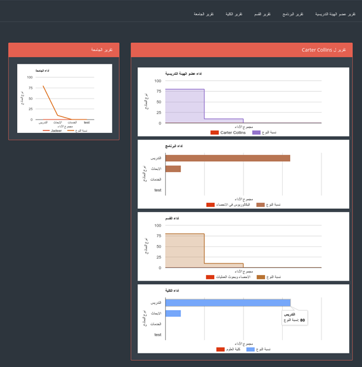
16. دليل المستخدم ¶
وحدة البناء هذه تحتوي على جميع الروابط التي قد يحتاجها المستخدم
-
للدخول إلى دليل المستخدم أنقر على "دليل المستخدم في اللائحة الرئيسية
-
ستظهر لك لائحة تضم جميع الأدلة التي تم رفعها مسبقاً على نظام جدير
-
يمكن للمشرف الرئيسي أن يقوم بإضافة الأدلة الخاصة به من خلال النقر على "إضافة دليل
مستخدم"
-
قم بتعبئة البيانات المطلوبة ومن ثم أنقر على حفظ التعديلات